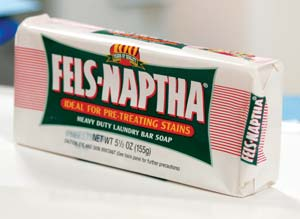

This insect spray is economical and environmentally safe for indoors or in the garden. You can use it for soft bodied insects, such as aphids, and for little sugar ants.
To make the insecticidal soap spray, shave one quarter of a bar of Fels-Naptha laundry soap (about 1 inch) into 1 quart of heated water and stir until dissolved. This will be your insecticidal soap concentrate. Put the soap solution into a labeled jar.
To use the soap spray, put 1 teaspoon of concentrate per quart into a sprayer. This insecticidal soap is a contact poison, so spray it directly onto the insects you want to eliminate from your home, garden or orchard. For additional killing power, add one-quarter cup of rubbing alcohol per quart.
|
 MATTHEW STALLBAUMER Fels-Naptha soap, available in grocery stores, is an effective nontoxic insecticide. |
|
|